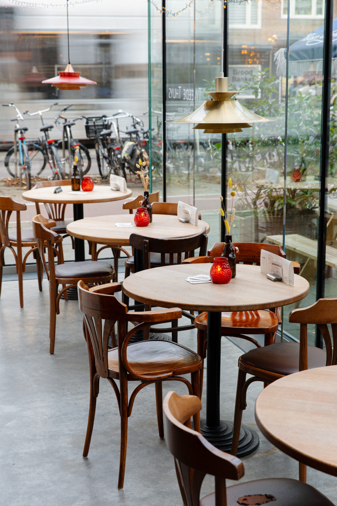
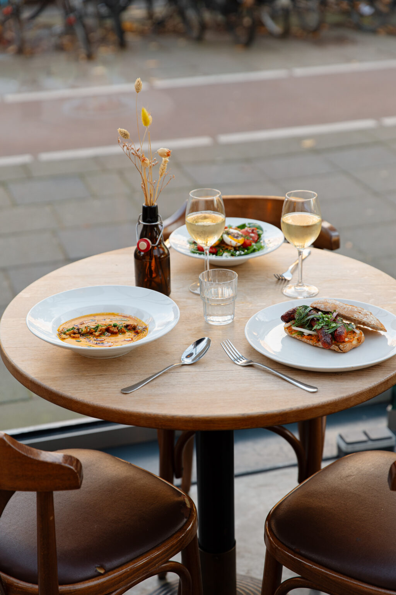
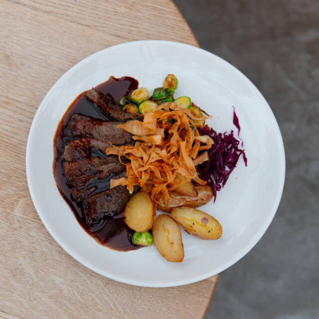
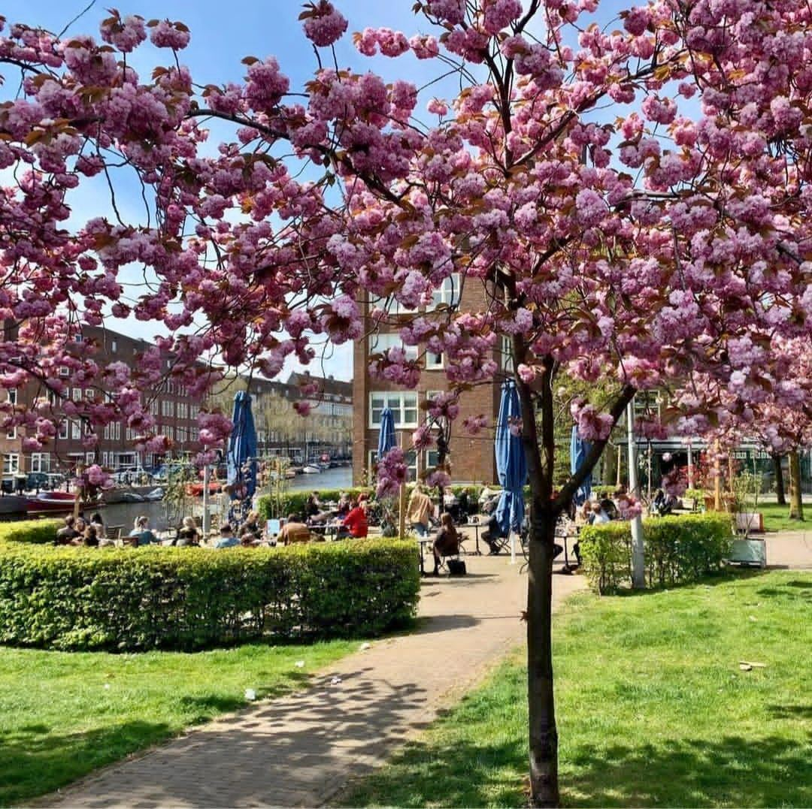
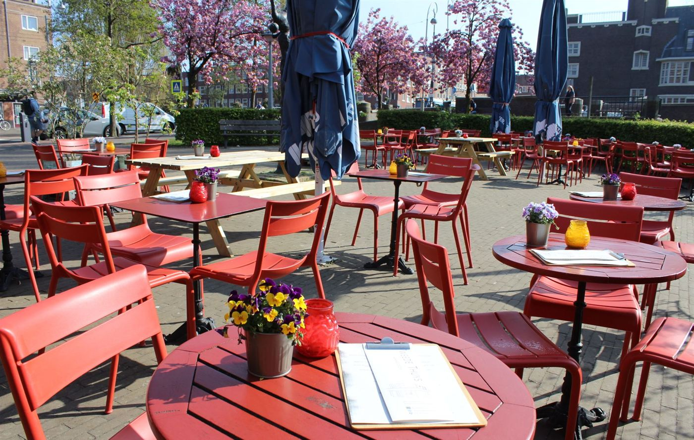
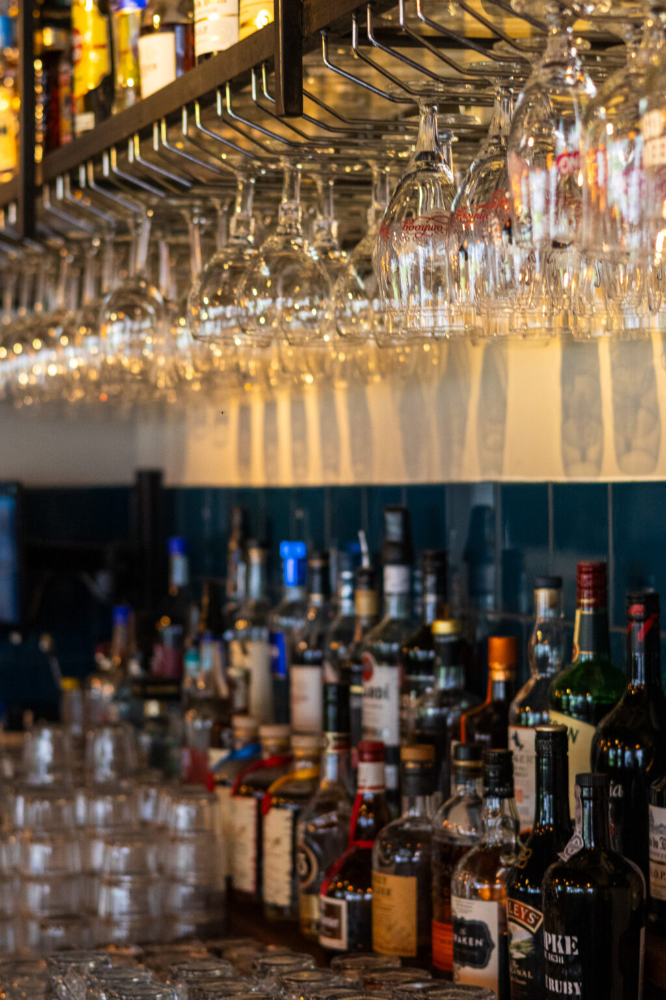

Postjesweg 7, De Baarsjes, Amsterdam
Tweede Thuys
Lekker, vers en betaalbaar eten in Amsterdam-West. Voor een uitgebreide lunch, een borrel na je werk of een compleet diner.
Elke dag open vanaf 11:00


Van eerste koffie tot laatste ronde
Zeven dagen per week, voor lunch, borrel en diner.
Welkom bij Tweede Thuys
Bij Tweede Thuys ben je aan het juiste adres voor lekker, vers en betaalbaar eten in Amsterdam-West. Of je nu gezellig wilt lunchen, uitgebreid wilt dineren of met vrienden wilt genieten van een borrel: bij ons voel je je direct thuis.
Gelegen aan de Postjesweg in De Baarsjes is Tweede Thuys een gezellige ontmoetingsplek voor buurtbewoners, Amsterdammers en bezoekers van de stad. We serveren verse gerechten voor een betaalbare prijs en vinden dat goed eten toegankelijk moet zijn voor iedereen.
Schuif aan met z’n tweeën, kom met vrienden of neem je familie mee. Bij Tweede Thuys is iedereen welkom!
Goede ingrediënten, fijne leveranciers
Lekker eten begint bij goede ingrediënten. Daarom werken we graag samen met leveranciers die aandacht hebben voor hun producten.
- BroodBakkerij Ulmus
- VleesLindenhoff
- VisJan Veerman Vis
- Vaste leverancierBidfood
Want goed eten hoeft niet ingewikkeld te zijn. Het draait om smaak, aandacht en samen genieten.
Menukaart
Onze gerechten wisselen elke maand. Dit is de kaart van november 2026.
Lunch 11:00 tot 16:00
- Lichtpittige pompoensoepmet pompoenpitten, chiliolie, croutons en baguette9,5
- Portobello gevuld met spinazie en ricottamet rucola, croutons, balsamico en baguette13,5
- Gebakken geitenkaassalademet biet, pompoen, walnoot en baguette13,5
- Smashed avocado op zuurdesem van Ulmusmet gebakken paddenstoelen, zachtgekookt ei, rucola, krokante sjalotjes (+ bacon 1,-)14,5
- Pastramitosti op landbroodmet mosterdbechamel, gruyère, zuurkool en augurk14,5
- Krokante kip op briochemet kimchimayo, koolsla, gochujang glaze14,5
Glutenvrij brood mogelijk.
Verse sappen en huisgemaakte limonade
- Verse jus d’orange5
- Shake van appel, peer, munt, spinazie en limoen5
- Huisgemaakte citroenlimonade4,5
Zoet
- Wentelteefjescranberry, hangop7
- Witte chocolade cheesecakeseizoensfruit7
- Browniestoofpeer, butterscotch7
Snacks
- Bitterballen8 stuks9,5
- Vega bitterballen8 stuks10,5
- Mini kaassoufflé8 stuks10
- Mini Mexicano6 stuks8,5
- Mix van 12 stuks14,5
- Friet met mayo5
- Olijven5,5
- Nootjes3,5
Voor jezelf of om te delen 16:00 tot 22:00
- Gerookte haring rillette met brood8,5
- Sardientjes uit blik met brood13
- Paté van Lindenhoff met brood9
- Hooibergham van Lindenhoff11,5
- Kaasplankje van Lindenhoff13
- Brood met dip6
- Oeuf mayo6,5
- Toast met bietentartaar, burrata en ansjovis10
- Toast met geitenkaas, cranberry en walnoot10
Voorgerechten 17:30 tot 22:00
- Lichtpittige pompoensoeppompoenpitten, chiliolie, croutons8,5
- Geroosterde biet en pompoengeslagen ricotta, hazelnoot, salie, balsamico11,5
- Gerookte haringsalade van kool, mandarijn, kuit12,5
- Steak tartaar tonnatoparmezaancrisp, gefrituurde kappertjes13,5
Nagerechten
- Affogato6,5
- Wentelteefjescranberry, hangop7
- Witte chocolade cheesecakeseizoensfruit7
- Browniestoofpeer, butterscotch7
- Kaasplankje met kazen van Lindenhoff13
Hoofdgerechten 17:30 tot 22:00
- Huisgemaakte pasta van de dagvraag het personeel18,5
- Runderbiefstuk van Lindenhoffparmezaan rösti, geroosterde groenten, champignonsaus26,5
- Gekonfijte eendenboutbonencassoulet, geroosterde prei, krokant spek22,5
- Kabeljauwbimi, venkel, geroosterde aardappelen, venkelsaus25
- Bietenpolentagebakken koningsboleet, cavolo nero pesto, feta19,5
- Melanzane van aubergineburrata, tomatensaus, arancini, parmezaan, cherrytomaten20,5



Terras aan het water
Op zoek naar een gezellig terras aan het water in Amsterdam-West? Bij Tweede Thuys geniet je van een ontspannen sfeer aan de Postjesweg in De Baarsjes.
Neem plaats voor een heerlijke lunch, een gezellige borrel of een betaalbaar diner. Of je nu wilt genieten van een zonnige middag of met vrienden wilt bijkletsen: je bent van harte welkom.
Groepen, verjaardagen en zakelijke borrels
Ook voor grotere groepen ben je bij Tweede Thuys aan het juiste adres. Wil je je verjaardag vieren, met vrienden samenkomen of een gezellige bedrijfsborrel organiseren? We denken graag met je mee over de mogelijkheden.
Of het nu gaat om een informele borrel, een verjaardag of een zakelijke bijeenkomst: we maken er graag een gezellige gelegenheid van.

Eerst eten of borrelen voor je naar Het Sieraad gaat?
Ga je naar een feest, clubavond of evenement bij Het Sieraad? Tweede Thuys ligt er direct naast. Begin je avond ontspannen met een lunch, diner of borrel, en loop daarna zo door.
Kom gezellig langs
- Adres
- Postjesweg 7
De Baarsjes, Amsterdam - Open
- 7 dagen per week vanaf 11:00
Lunch 11:00 tot 16:00
Borrel en delen 16:00 tot 22:00
Diner 17:30 tot 22:00 - Reserveren
- 020 891 4750
info@tweedethuys.nl - Volgen
- Instagram @tweedethuys